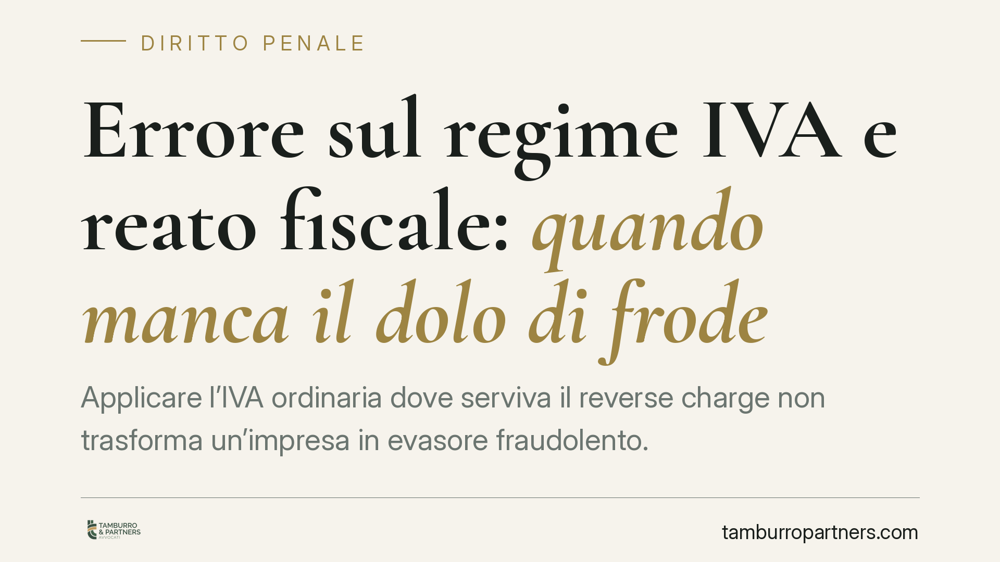

Errore sul regime IVA e reato fiscale: quando manca il dolo di frode
Applicare l'IVA ordinaria dove serviva il reverse charge non trasforma un'impresa in evasore fraudolento. Quando l'operazione commerciale è reale e documentata, l'errore di regime resta un'irregolarità tributaria, non il reato di dichiarazione fraudolenta. È una distinzione che incide direttamente sulla legittimità del sequestro preventivo e sulla difesa dell'imprenditore indagato.

Il fatto
Un errore ricorrente nelle operazioni tra imprese riguarda il meccanismo del reverse charge, ossia l'inversione contabile con cui l'IVA è assolta dal cessionario e non dal cedente. Capita che venga invece applicata l'IVA ordinaria in fattura, con il fornitore che la addebita e il cliente che la detrae. La domanda che ne deriva ha peso penale: questo scostamento integra una dichiarazione fraudolenta?
La risposta è netta quando l'operazione sottostante è reale. Se la merce è stata effettivamente ceduta e il servizio effettivamente reso, l'errore sul regime IVA non è idoneo, da solo, a fondare l'accusa di frode fiscale.
Inquadramento normativo
Il reverse charge è disciplinato dall'art. 17 del DPR 633/1972. Per le cessioni di prodotti hi-tech ed elettronica — telefoni cellulari, microprocessori, dispositivi a circuito integrato — la fattispecie rilevante è l'art. 17, comma 6, lettere b) e c) del DPR 633/1972, che estende l'inversione contabile a questi settori proprio per contrastare le frodi carosello.
Sul versante penale, l'art. 2 del D.Lgs. 74/2000 punisce la dichiarazione fraudolenta mediante uso di fatture o altri documenti per operazioni inesistenti. Il fulcro della norma è l'inesistenza dell'operazione: fatture che documentano scambi mai avvenuti, in tutto o in parte. È questo l'inganno che la legge colpisce.
Qui sta lo snodo. Un'operazione reale, ma fatturata con il regime IVA sbagliato, non è un'operazione inesistente. Manca l'elemento oggettivo del reato: non c'è una falsa rappresentazione della realtà economica, ma un'errata qualificazione tributaria di un fatto vero.
Perché non ricorrono nemmeno gli artt. 3 e 4
La difesa non si esaurisce sull'art. 2. Anche la dichiarazione fraudolenta mediante altri artifici, prevista dall'art. 3 del D.Lgs. 74/2000, richiede una condotta ingannatoria e mezzi fraudolenti diretti a ostacolare l'accertamento: elementi assenti quando l'operazione è trasparente e tracciata.
Spesso viene esclusa anche l'infedele dichiarazione ex art. 4 dello stesso decreto, che presuppone il dolo specifico di evasione oltre il superamento delle soglie di punibilità. Un'operazione reale, registrata e con IVA comunque movimentata nel sistema, tende a non produrre l'imposta evasa nella misura richiesta né a rivelare l'intento di sottrarsi al fisco.
Implicazioni pratiche
La conseguenza più concreta riguarda il sequestro preventivo. La misura cautelare reale presuppone il fumus del reato, cioè indizi seri della sua sussistenza. Se l'errore di regime IVA non integra alcuna fattispecie penale, quel fumus viene meno alla radice.
Per l'impresa significa che un sequestro fondato su un mero errore contabile è aggredibile. Non si tratta di negare l'irregolarità tributaria — che resta e va sanata sul piano amministrativo con l'Agenzia delle Entrate — ma di contestare la qualificazione penale del fatto e la legittimità del vincolo sui beni aziendali.
La linea di confine è precisa: da un lato l'operazione inesistente, che apre alla frode fiscale; dall'altro l'operazione reale con vizio di regime, che resta materia tributaria. Confondere i due piani espone l'imprenditore a un procedimento penale sproporzionato rispetto alla condotta effettiva.
Cosa fare in concreto
- Verifica la natura reale dell'operazione: raccogli DDT, contratti, prova del pagamento e della consegna. La documentazione dell'effettività dello scambio è il primo scudo contro l'accusa di frode.
- Distingui subito il piano tributario da quello penale: l'irregolarità IVA va gestita con ravvedimento o contraddittorio con l'Agenzia, senza che questo equivalga ad ammissione di reato.
- Contesta il fumus in caso di sequestro preventivo: è opportuno impostare la difesa evidenziando l'assenza degli elementi oggettivi degli artt. 2, 3 e 4 D.Lgs. 74/2000.
- Conserva la corrispondenza commerciale e le registrazioni contabili: dimostrano trasparenza e assenza di dolo di evasione.
- Consulta un difensore prima di ogni interlocuzione con gli inquirenti, per non compromettere la strategia con dichiarazioni improvvide.
La direzione è chiara: il sistema penale-tributario è costruito per colpire l'inganno, non l'errore.
Nota sugli estremi
Gli estremi della pronuncia richiamata nella fonte non risultano al momento verificabili con certezza (numero, sezione e data di deposito). Il contenuto qui esposto riflette l'orientamento consolidato in materia; per la citazione puntuale della sentenza è necessaria la verifica sulle banche dati ufficiali.
Contributo informativo a cura di Tamburro & Partners Avvocati. Non costituisce parere legale.
Ogni condominio ha una storia a sé.
Se gestisci un'amministrazione e vuoi un confronto su una specifica questione condominiale, scrivi allo studio. Ti rispondiamo entro un giorno lavorativo.